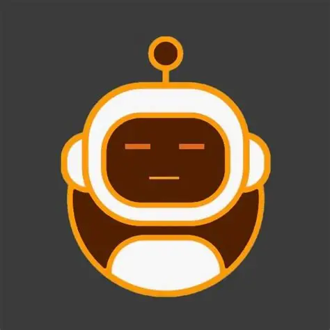

Sou estudante de Publicidade e Propaganda com foco em marketing. Gosto de entender por que as pessoas param, sentem e decidem — e de transformar essa compreensão em comunicação que faça sentido de verdade.
Meu caminho mistura repertório acadêmico com prática real: atendo pessoas todo dia no trabalho, crio conteúdo e comunidade por iniciativa própria, e estudo marcas porque genuinamente me fascina o que faz uma marca permanecer na memória de alguém.
Não sei tudo ainda — e acho que isso é parte do que me move. Cada projeto é uma chance de entender melhor como estratégia e sensibilidade se encontram numa comunicação que funciona.
Fundei a Publigirls para conectar mulheres da comunicação — um espaço de troca, apoio e circulação de oportunidades. Porque acredito que comunidade também é estratégia.
"Comunidade que não tem identidade vira grupo de WhatsApp."
"Produto se compra. Marca se escolhe. A diferença está no vínculo."
"Uma marca que fala com quem faz marcas precisa ter duplo sentido em tudo."
Não existe boa comunicação sem entender quem está do outro lado. Começo todo projeto tentando entender a pessoa, não o produto.
Não acredito em comunicação puramente analítica nem puramente criativa. O que funciona é quando as duas trabalham na mesma direção.
Clareza, consistência e atenção ao processo não são apenas virtudes de gestão — são parte do que faz uma comunicação ser confiável.
Tem uma ideia?
Vamos conversar sobre ela.
Aberta a estágios, projetos freelancer e conexões com pessoas que acreditam que comunicação é sobre construir algo real. Me conta o que você tem em mente.